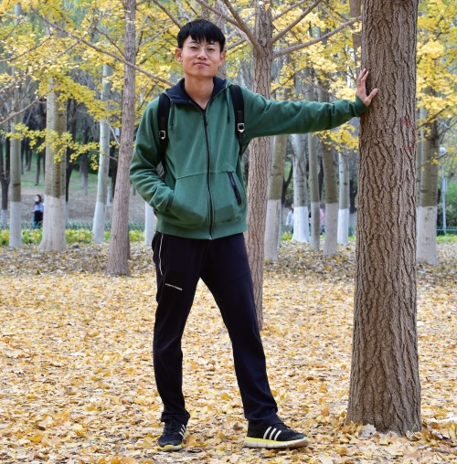

|  | Chengyang Li (李承阳) |
Liping Zhu, Bohua Wan,
Chengyang Li*, Gangyi Tian, YiHou, Kun Yuan,
“Dyadic relational graph convolutional networks for skeleton-based human interaction recognition,”
Pattern Recognition (PR),
2021.
(SCI Q1 Top, IF=7.196)